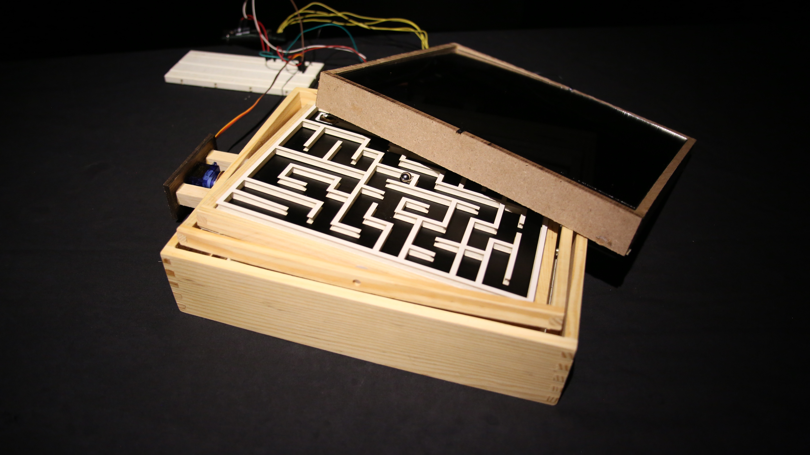

Dark Maze
Tags go here
Tools Used : Arduino, openBCI, Processing
In collaboration with Jordan Frand, Christina Choi and Wangshu Sun
A tilt maze controlled by the users EEG and EMG signals.

This project was an exploration of using the openBCI kit to create meaningful interactions.
The openBCI software and hardware has the potential to measure EEG, EMG and ECG. We used this in the following manner to control a tilt maze, blinks triggered EMG signals which help navigate the moves left and right. Titling the head forward and backward triggered the accelerometer which moved the ball forward and backward. And finally, focusing triggered high amplitude alpha waves which would turn on the lights in the maze.
This made our participants focus to see the maze and also use their memory to remember the path when they were not focusing.

We made the prototype for the maze in Unity and controlled it with the modified openBCI code that pulled the required signals. We tested it out in the NeuroTechNYC Meetup. During user testing,we had people who wished to try drawing with the openBCI code – so we tried the same as well. Below is a video from the user testing.
Post user testing, we started building our physical maze and controlling motors with the signals from the openBCI hardware.
← Back to Home